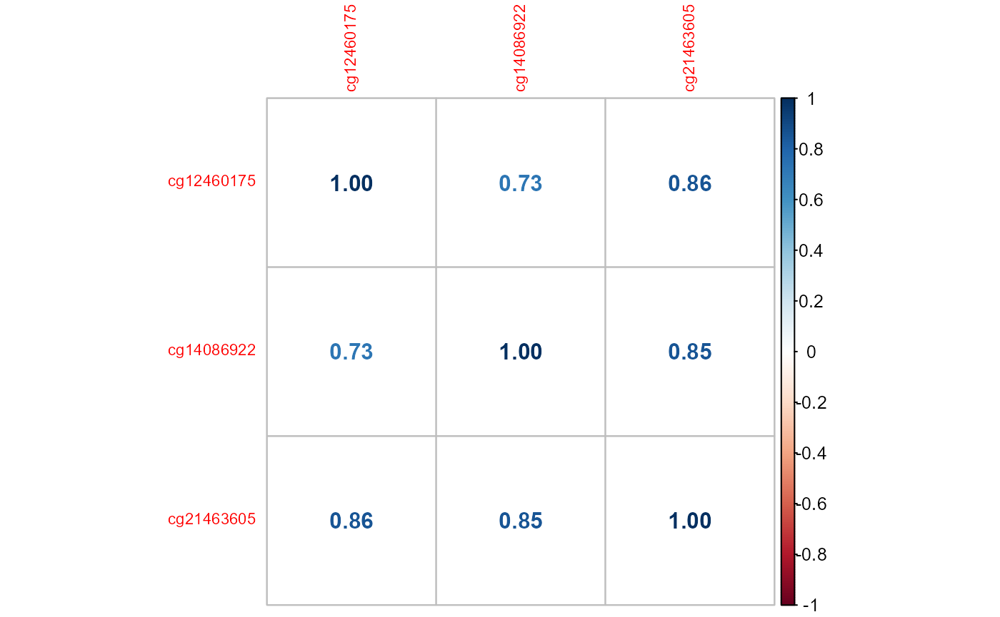

vignettes/vin1_Introduction_to_coMethDMR_geneBasedPipeline.Rmd
vin1_Introduction_to_coMethDMR_geneBasedPipeline.RmdcoMethDMR is an R package that identifies genomic regions that are both co-methylated and differentially methylated in Illumina array datasets. Instead of testing all CpGs within a genomic region, coMethDMR carries out an additional step that selects co-methylated sub-regions first without using any outcome information. Next, coMethDMR tests association between methylation within the sub-region and continuous phenotype using a random coefficient mixed effects model, which models both variations between CpG sites within the region and differential methylation simultaneously.
The latest version can be installed by
if (!requireNamespace("BiocManager", quietly = TRUE))
install.packages("BiocManager")
BiocManager::install("coMethDMR")After installation, the coMethDMR package can be loaded into R using:
If you are running the coMethDMR package for the first time, you will also need to download supplemental data sets from the sesameData package. This happens automatically for the 450k and EPIC arrays when you load coMethDMR for the first time. If you experience errors in this process, you may have your cache in an older default location. Please follow these steps to update where these genomic data are stored: https://bioconductor.org/packages/devel/bioc/vignettes/ExperimentHub/inst/doc/ExperimentHub.html#default-caching-location-update.
The input of coMethDMR are methylation beta values. We assume quality control and normalization of the methylation dataset have been performed, by R packages such as minfi or RnBeads. For illustration, we use a subset of prefrontal cortex methylation data (GEO GSE59685) from a recent Alzheimer’s disease epigenome-wide association study which was described in Lunnon et al. (2014). This example dataset contains beta values for 8552 CpGs on chromosome 22 for a random selection of 20 subjects.
data(betasChr22_df)
betasChr22_df[1:5, 1:5]## GSM1443279 GSM1443663 GSM1443434 GSM1443547 GSM1443577
## cg00004192 0.9249942 0.8463296 0.8700718 0.9058205 0.9090382
## cg00004775 0.6523025 0.6247554 0.7573476 0.6590817 0.6726261
## cg00012194 0.8676339 0.8679048 0.8484754 0.8754985 0.8484458
## cg00013618 0.9466056 0.9475467 0.9566493 0.9588431 0.9419563
## cg00014104 0.3932388 0.5525716 0.4075900 0.3997278 0.3216956If you have used either the minfi or RnBeads packages to pre-process your methylation data, we now show a quick example of the code necessary to create a methylation data frame similar to betasChr22_df above (note that dataObject_minfi and dataObject_RnBeads are objects containing the pre-processed DNA methylation data as returned by the minfi:: or RnBeads:: packages, respectively):
### minfi ###
betas_df <- as.data.frame(
minfi::getMethSignal(dataObject_minfi, what = "Beta")
)
### RnBeads ###
betas_df <- as.data.frame(
RnBeads::meth(dataObject_RnBeads, row.names = TRUE)
)The corresponding phenotype dataset included variables stage (Braak AD stage), subject.id, slide (batch effect), Sex, Sample and age.brain (age of the brain donor). Please note the phenotype file needs to have a variable called “Sample” that will be used by coMethDMR to link to the methylation dataset.
## stage subject.id sex Sample age.brain slide
## 3 0 1 Sex: FEMALE GSM1443251 82 6042316048
## 8 2 2 Sex: FEMALE GSM1443256 82 6042316066
## 10 NA 3 Sex: MALE GSM1443258 89 6042316066
## 15 1 4 Sex: FEMALE GSM1443263 81 7786923107
## 21 2 5 Sex: FEMALE GSM1443269 92 6042316121
## 22 1 6 Sex: MALE GSM1443270 78 6042316099For illustration, suppose we are interested in identifying co-methylated genomic regions associated with AD stages (stage treated as a linear variable). Here we demonstrate analysis of genomic regions mapped to CpG islands on chromosome 22. However the workflow can be similarly conducted for other types of genomic regions. See details in Section 2.1 below for gene based pipeline that tests genic and intergenic regions.
There are several steps: (1) obtain CpGs located closely (see details in Section 2.1 below) in genomic regions mapped to CpG islands, (2) identify co-methylated regions, and (3) test co-methylated regions against the outcome variable AD stage.
For the first step, we use the following commands:
CpGisland_ls <- readRDS(
system.file(
"extdata",
"CpGislandsChr22_ex.rds",
package = 'coMethDMR',
mustWork = TRUE
)
)Here, CpGisland_ls is a list of 20 items, with each item of the list including a group of CpG probe IDs located closely within a particular CpG island region. Section 2.1 discusses how to import additional types of genomic regions.
Next, we identify co-methylated regions based on Mvalues.
system.time(
coMeth_ls <- CoMethAllRegions(
dnam = betasChr22_df,
betaToM = TRUE, # converts beta to m-values
method = "pearson",
CpGs_ls = CpGisland_ls,
arrayType = "450k",
returnAllCpGs = FALSE,
output = "CpGs",
nCores_int = 1
)
)## snapshotDate(): 2021-05-18## see ?sesameData and browseVignettes('sesameData') for documentation## user system elapsed
## 13.02 1.67 15.27
# ~15 seconds
coMeth_ls## $`chr22:18268062-18268249`
## [1] "cg12460175" "cg14086922" "cg21463605"
##
## $`chr22:18324579-18324769`
## [1] "cg19606103" "cg14031491" "cg03816851"
##
## $`chr22:18531243-18531447`
## [1] "cg25257671" "cg06961233" "cg08819022"coMeth_ls is list with that contains groups of CpG probeIDs corresponding to co-methylated regions. Three comethylated regions were identified in this example.
If we want to look at co-methylation within the first co-methylated region:
WriteCorrPlot <- function(beta_mat){
require(corrplot)
require(coMethDMR)
CpGs_char <- row.names(beta_mat)
CpGsOrd_df <- OrderCpGsByLocation(
CpGs_char, arrayType = c("450k"), output = "dataframe"
)
betaOrdered_mat <- t(beta_mat[CpGsOrd_df$cpg ,])
corr <- cor(
betaOrdered_mat, method = "spearman", use = "pairwise.complete.obs"
)
corrplot(corr, method = "number", number.cex = 1, tl.cex = 0.7)
}
# subsetting beta values to include only co-methylated probes
betas_df <- subset(
betasChr22_df,
row.names(betasChr22_df) %in% coMeth_ls[[1]]
)
WriteCorrPlot(betas_df)## Warning: package 'corrplot' was built under R version 4.1.2
Next, we test these co-methylated regions against stage using a random coefficient model (more details in section 2.3 below).
Some messages are generated during mixed models fitting, which are saved to the file specified by outLogFile. The interpretations of these messages can be found in the FAQs at the end of this document (see Section 3, item (1) and (2)).
out_df <- lmmTestAllRegions(
betas = betasChr22_df,
region_ls = coMeth_ls,
pheno_df,
contPheno_char = "stage",
covariates_char = NULL,
modelType = "randCoef",
arrayType = "450k"
# generates a log file in the current directory
# outLogFile = paste0("lmmLog_", Sys.Date(), ".txt")
)## snapshotDate(): 2021-05-18## see ?sesameData and browseVignettes('sesameData') for documentation## Analyzing region chr22:18268062-18268249.## Analyzing region chr22:18324579-18324769.## Analyzing region chr22:18531243-18531447.## For future calls to this function, perhaps specify a log file.
## Set the file name of the log file with the outLogFile argument.
out_df## chrom start end nCpGs Estimate StdErr Stat pValue
## 1 chr22 18268062 18268249 3 -0.06678558 0.03884685 -1.719202 0.08557761
## 2 chr22 18324579 18324769 3 0.03549924 0.02885584 1.230227 0.21861213
## 3 chr22 18531243 18531447 3 -0.05181161 0.05082589 -1.019394 0.30801599
## FDR
## 1 0.2567328
## 2 0.3080160
## 3 0.3080160Here out_df is a data frame of genomic regions, with corresponding p-values and false discovery rate (FDRs) from the random coefficient mixed model.
We can annotate these results by adding corresponding genes and probes mapped to the genomic regions.
system.time(
outAnno_df <- AnnotateResults(
lmmRes_df = out_df,
arrayType = "450k"
)
)## user system elapsed
## 7.66 1.33 9.00
# ~12 seconds
outAnno_df## chrom start end nCpGs Estimate StdErr Stat pValue
## 1 chr22 18268062 18268249 3 -0.06678558 0.03884685 -1.719202 0.08557761
## 2 chr22 18324579 18324769 3 0.03549924 0.02885584 1.230227 0.21861213
## 3 chr22 18531243 18531447 3 -0.05181161 0.05082589 -1.019394 0.30801599
## FDR UCSC_RefGene_Group UCSC_RefGene_Accession UCSC_RefGene_Name
## 1 0.2567328
## 2 0.3080160 Body NM_001122731;NM_015241 MICAL3
## 3 0.3080160
## Relation_to_Island
## 1 Island
## 2 Island
## 3 IslandTo further examine the significant regions, we can also extract individual CpG p-values within these significant regions. For example, for the most significant region chr22:18268062-18268249,
outCpGs_df <- CpGsInfoOneRegion(
regionName_char = "chr22:18268062-18268249",
betas_df = betasChr22_df,
pheno_df = pheno_df,
contPheno_char = "stage",
covariates_char = NULL,
arrayType = "450k"
)## snapshotDate(): 2021-05-18## see ?sesameData and browseVignettes('sesameData') for documentation## snapshotDate(): 2021-05-18## see ?sesameData and browseVignettes('sesameData') for documentation## snapshotDate(): 2021-05-18## see ?sesameData and browseVignettes('sesameData') for documentation
outCpGs_df## Region cpg chr pos slopeEstimate slopePval
## 1 chr22:18268062-18268249 cg12460175 chr22 18268062 -0.0329 0.3785
## 2 chr22:18268062-18268249 cg14086922 chr22 18268239 -0.0724 0.0667
## 3 chr22:18268062-18268249 cg21463605 chr22 18268249 -0.0951 0.0255
## UCSC_RefGene_Name UCSC_RefGene_Accession UCSC_RefGene_Group
## 1
## 2
## 3These CpGs mapped to intergenic regions, so there are no gene names associated with the probes. For genic regions such as chr22:19709548-19709755, we would have results such as the following:
# library("GenoGAM")
# NOTE 2022-03-28: what are we using this package for again?
CpGsInfoOneRegion(
regionName_char = "chr22:19709548-19709755",
betas_df = betasChr22_df,
pheno_df = pheno_df,
contPheno_char = "stage",
covariates_char = NULL,
arrayType = "450k"
)## snapshotDate(): 2021-05-18## see ?sesameData and browseVignettes('sesameData') for documentation## snapshotDate(): 2021-05-18## see ?sesameData and browseVignettes('sesameData') for documentation## snapshotDate(): 2021-05-18## see ?sesameData and browseVignettes('sesameData') for documentation## Region cpg chr pos slopeEstimate slopePval
## 1 chr22:19709548-19709755 cg04533276 chr22 19709548 -0.0656 0.1529
## 2 chr22:19709548-19709755 cg20193802 chr22 19709696 -0.0346 0.4808
## 3 chr22:19709548-19709755 cg05726109 chr22 19709755 0.0021 0.9585
## UCSC_RefGene_Name UCSC_RefGene_Accession UCSC_RefGene_Group
## 1 SEPT5 NM_002688 Body
## 2 SEPT5;GP1BB NM_002688;NM_000407 Body;TSS1500
## 3 SEPT5;GP1BB NM_002688;NM_000407 Body;TSS1500coMethDMR workflow
Genomic regions on the Illumina arrays can be defined based on their relations to genes or CpG Islands. To reduce redundancy in the tested genomic regions, we recommend first testing genic and intergenic regions, then add annotations to each genomic region for their relation to CpG islands.
In coMethDMR package, for 450k arrays, the relevant genomic regions to be analyzed are in files 450k_Gene_3_200.RDS and 450k_InterGene_3_200.rds. For EPIC arrays, the relevant genomic regions are in files EPIC_Gene_3_200.rds and EPIC_InterGene_3_200.rds. These additional data sets are available at https://github.com/TransBioInfoLab/coMethDMR_data.
These files were created using the function WriteCloseByAllRegions, briefly, for genic regions, within each gene, we identified clusters of CpGs located closely (i.e. the maximum separation between any two consecutive probes is 200bp; maxGap = 200), and we required each cluster to have at least 3 CpGs (minCpGs = 3). For intergenic regions, we identified clusters CpGs similarly for each chromosome. To extract clusters of close-by CpGs from pre-defined genomic regions with different values of maxGap and minCpGs, the WriteCloseByAllRegions function can be used.
The pre-computed genomic regions can be accessed using the following commands. For geneic regions in 450k arrays,
gene_ls <- readRDS(
system.file(
"extdata",
"450k_Gene_3_200.rds",
package = 'coMethDMR',
mustWork = TRUE
)
)Here gene_ls is a list, with each item containing a character vector of CpGs IDs for a particular region in a gene.
Vignette # 2 illustrates how to leverage parallel computing via BiocParallel R package to make gene-based analysis fast.
Before identifying co-methylated clusters, we recommend removing uninteresting technical and biological effects, so that the resulting co-methylated clusters are only driven by the biological factors we are interested in. This can be accomplished using the GetResiduals function.
For example, the following script computes residuals from linear model Mvalues ~ age.brain + sex + slide (note that we use only a subset of the Chromosome 22 CpG islands for computing time consideration).
Cgi_ls <- readRDS(
system.file(
"extdata",
"CpGislandsChr22_ex.rds",
package = 'coMethDMR',
mustWork = TRUE
)
)
betasChr22_df <-
betasChr22_df[rownames(betasChr22_df) %in% unlist(Cgi_ls)[1:20], ]
resid_mat <- GetResiduals(
dnam = betasChr22_df,
# converts to Mvalues for fitting linear model
betaToM = TRUE,
pheno_df = pheno_df,
covariates_char = c("age.brain", "sex", "slide")
)## Phenotype data is not in the same order as methylation data. We used column Sample in phenotype data to put these two files in the same order.Within each genomic region, coMethDMR identifies contiguous and co-methylated CpGs sub-regions without using any outcome information. To select these co-methylated sub-regions, we use the rdrop statistic, which is the correlation between each CpG with the sum of methylation levels in all other CpGs. The default is rDropThresh_num = 0.4. We recommend this setting based on our simulation study. Note that higher rDropThresh_num values lead to fewer co-methylated regions.
Again, for illustration, we use CpG islands. For example, if we are interested in identifying co-methylated sub-region within the first genomic region in Cgi_ls:
Cgi_ls <- readRDS(
system.file(
"extdata",
"CpGislandsChr22_ex.rds",
package = 'coMethDMR',
mustWork = TRUE
)
)
coMeth_ls <- CoMethAllRegions(
dnam = resid_mat,
betaToM = FALSE,
method = "pearson",
CpGs_ls = Cgi_ls[1],
arrayType = "450k",
returnAllCpGs = FALSE,
output = "CpGs"
)## snapshotDate(): 2021-05-18## see ?sesameData and browseVignettes('sesameData') for documentation
coMeth_ls## NULLThe results (NULL) indicate there is no co-methylated sub-region within the first genomic region.
What about the other 19 regions? Next we look at a region (5th region in Cgi_ls) where there is a co-methylated sub-region:
coMeth_ls <- CoMethAllRegions(
dnam = resid_mat,
betaToM = FALSE,
CpGs_ls = Cgi_ls[5],
arrayType = "450k",
returnAllCpGs = FALSE,
output = "CpGs"
)## snapshotDate(): 2021-05-18## see ?sesameData and browseVignettes('sesameData') for documentation
coMeth_ls## $`chr22:17565612-17565675`
## [1] "cg21717745" "cg02866761" "cg05444620"coMeth_ls is a list, where each item is a list of CpG probe IDs for a co-methylated sub-region.
If we want to see the detailed output of the coMethDMR algorithm, that is, how the co-methylated region was obtained, we can specify output = "dataframe":
coMethData_df <- CoMethAllRegions(
dnam = resid_mat,
betaToM = FALSE,
CpGs_ls = Cgi_ls[5],
arrayType = "450k",
returnAllCpGs = FALSE,
output = "dataframe"
) [[1]]## snapshotDate(): 2021-05-18## see ?sesameData and browseVignettes('sesameData') for documentation
coMethData_df## Region CpG Chr MAPINFO r_drop keep
## 1 chr22:17565612-17565904 cg21717745 chr22 17565612 0.7850186 1
## 2 chr22:17565612-17565904 cg02866761 chr22 17565664 0.5547508 1
## 3 chr22:17565612-17565904 cg05444620 chr22 17565675 0.6494019 1
## 4 chr22:17565612-17565904 cg03304299 chr22 17565742 0.3282093 0
## keep_contiguous
## 1 1
## 2 1
## 3 1
## 4 0coMethData_df provides the details on how the co-methylated region was obtained: Here keep = 1 if rDropThresh_num > 0.4 (i.e. a co-methylated CpG), and keep_contigous indicates if the probe is in a contiguous co-methylated region. Note that only the last 3 CpGs constitutes the co-methylated cluster.
To test association between a continuous phenotype and methylation values in a contiguous co-methylated region, two mixed models have been implemented in the function lmmTestAllRegions: a random coefficient mixed model (modelType = "randCoef") and a simple linear mixed model (modelType = "simple").
The random coefficient mixed model includes both a systematic component that models the mean for each group of CpGs, and a random component that models how each CpG varies with respect to the group mean (random probe effects). It also includes random sample effects that model correlations between multiple probes within the same sample.
More specifically, the random coefficient model is methylation M value ~ contPheno_char + covariates_char + (1|Sample) + (contPheno_char|CpG). The last term (contPheno_char|CpG) specifies both random intercepts and slopes for each CpG.
The simple linear mixed model includes all the terms in the random coefficient model except random probe effects.
The simple linear mixed model is
methylation M value ~ contPheno_char + covariates_char + (1|Sample)
To test one genomic region against the continuous phenotype stage, adjusting for age.brain:
lmmTestAllRegions(
betas = betasChr22_df,
region_ls = coMeth_ls[1],
pheno_df,
contPheno_char = "stage",
covariates_char = "age.brain",
modelType = "randCoef",
arrayType = "450k"
)## chrom start end nCpGs Estimate StdErr Stat pValue
## 1 chr22 17565612 17565675 3 0.03324127 0.02058149 1.615105 0.106288
## FDR
## 1 0.106288If we don’t want to adjust for any covariate effect, we can set covariates_char to NULL.
Finally, we demonstrate coMethDMR analysis for a particular gene, for example the ARFGAP3 gene.
data(betasChr22_df)We assume that the user knows the set of probes corresponding to the gene of interest. If this is not the case, we provide two data sets which contain mappings from gene symbols to probe IDs for both 450k (“450k_CpGstoGene_min3CpGs.rds”) and EPIC (“EPIC_CpGstoGene_min3CpGs.rds”) arrays. These two data sets are available at: https://github.com/TransBioInfoLab/coMethDMR_data/tree/main/data.
# list probes for this gene
ARFGAP3_CpGs_char <- c(
"cg00079563", "cg01029450", "cg02351223", "cg04527868", "cg09861871",
"cg26529516", "cg00539564", "cg05288033", "cg09367092", "cg10648908",
"cg14570855", "cg15656623", "cg23778094", "cg27120833"
)
# list probes located closely on this gene
gene3_200 <- CloseBySingleRegion(
CpGs_char = ARFGAP3_CpGs_char,
arrayType = "450k",
maxGap = 200,
minCpGs = 3
)
CpGsOrdered_ls <- lapply(
gene3_200,
OrderCpGsByLocation,
arrayType = "450k",
output = "dataframe"
)
names(gene3_200) <- lapply(CpGsOrdered_ls, NameRegion)
# List of regions
gene3_200## $`chr22:43253145-43253208`
## [1] "cg15656623" "cg10648908" "cg02351223"
##
## $`chr22:43253517-43253559`
## [1] "cg09861871" "cg00079563" "cg26529516" "cg04527868" "cg01029450"
##
## $`chr22:43254043-43254168`
## [1] "cg23778094" "cg00539564" "cg09367092"Now that we have a list of regions, we can find the co-methylated regions within the gene and test their statistical significance:
# co-methlyated region within the gene
coMeth_ls <- CoMethAllRegions(
dnam = betasChr22_df,
betaToM = TRUE,
method = "pearson",
CpGs_ls = gene3_200,
arrayType = "450k",
returnAllCpGs = FALSE,
output = "CpGs"
)## snapshotDate(): 2021-05-18## see ?sesameData and browseVignettes('sesameData') for documentation
coMeth_ls ## $`chr22:43253521-43253559`
## [1] "cg00079563" "cg26529516" "cg04527868" "cg01029450"
# test the co-methylated regions within the gene
results <- lmmTestAllRegions(
betas = betasChr22_df,
region_ls = coMeth_ls,
pheno_df,
contPheno_char = "stage",
covariates_char = "age.brain",
modelType = "randCoef",
arrayType = "450k"
# generates a log file in the current directory
# outLogFile = paste0("lmmLog_", Sys.Date(), ".txt")
)## snapshotDate(): 2021-05-18
## see ?sesameData and browseVignettes('sesameData') for documentation## Analyzing region chr22:43253521-43253559.## For future calls to this function, perhaps specify a log file.
## Set the file name of the log file with the outLogFile argument.Before we inspect the results, we will annotate them:
AnnotateResults(lmmRes_df = results, arrayType = "450k")## chrom start end nCpGs Estimate StdErr Stat pValue
## 1 chr22 43253521 43253559 4 -0.006608311 0.02820896 -0.2342628 0.8147809
## FDR UCSC_RefGene_Group UCSC_RefGene_Accession UCSC_RefGene_Name
## 1 0.8147809 TSS200 NM_001142293;NM_014570 ARFGAP3
## Relation_to_Island
## 1 IslandlmmTestAllRegions function, What does the message “boundary (singular) fit” mean?Lunnon K, Smith R, Hannon E, De Jager PL, Srivastava G, Volta M, Troakes C, Al-Sarraj S, Burrage J, Macdonald R, et al (2014) Methylomic profiling implicates cortical deregulation of ANK1 in Alzheimer’s disease. Nat Neurosci 17:1164-1170.
utils::sessionInfo()## R version 4.1.1 (2021-08-10)
## Platform: x86_64-w64-mingw32/x64 (64-bit)
## Running under: Windows 10 x64 (build 19042)
##
## Matrix products: default
##
## locale:
## [1] LC_COLLATE=English_United States.1252
## [2] LC_CTYPE=English_United States.1252
## [3] LC_MONETARY=English_United States.1252
## [4] LC_NUMERIC=C
## [5] LC_TIME=English_United States.1252
##
## attached base packages:
## [1] parallel stats graphics grDevices utils datasets methods
## [8] base
##
## other attached packages:
## [1] corrplot_0.92 sesameData_1.13.3 rmarkdown_2.11
## [4] ExperimentHub_2.0.0 AnnotationHub_3.0.2 BiocFileCache_2.0.0
## [7] dbplyr_2.1.1 BiocGenerics_0.38.0 coMethDMR_0.99.17
## [10] BiocStyle_2.20.2
##
## loaded via a namespace (and not attached):
## [1] systemfonts_1.0.4
## [2] plyr_1.8.6
## [3] splines_4.1.1
## [4] BiocParallel_1.26.2
## [5] GenomeInfoDb_1.28.4
## [6] ggplot2_3.3.5
## [7] digest_0.6.29
## [8] foreach_1.5.2
## [9] htmltools_0.5.2
## [10] lmerTest_3.1-3
## [11] fansi_1.0.2
## [12] magrittr_2.0.2
## [13] memoise_2.0.1
## [14] tzdb_0.2.0
## [15] limma_3.48.3
## [16] readr_2.1.2
## [17] annotate_1.70.0
## [18] Biostrings_2.60.2
## [19] matrixStats_0.61.0
## [20] askpass_1.1
## [21] siggenes_1.66.0
## [22] pkgdown_2.0.2
## [23] prettyunits_1.1.1
## [24] colorspace_2.0-3
## [25] blob_1.2.2
## [26] rappdirs_0.3.3
## [27] textshaping_0.3.6
## [28] xfun_0.29
## [29] dplyr_1.0.8
## [30] crayon_1.5.0
## [31] RCurl_1.98-1.6
## [32] jsonlite_1.7.3
## [33] genefilter_1.74.1
## [34] lme4_1.1-28
## [35] GEOquery_2.60.0
## [36] survival_3.2-13
## [37] iterators_1.0.14
## [38] glue_1.6.1
## [39] gtable_0.3.0
## [40] zlibbioc_1.38.0
## [41] XVector_0.32.0
## [42] DelayedArray_0.18.0
## [43] Rhdf5lib_1.14.2
## [44] HDF5Array_1.20.0
## [45] scales_1.1.1
## [46] DBI_1.1.2
## [47] rngtools_1.5.2
## [48] Rcpp_1.0.8
## [49] xtable_1.8-4
## [50] progress_1.2.2
## [51] bumphunter_1.34.0
## [52] mclust_5.4.9
## [53] bit_4.0.4
## [54] preprocessCore_1.54.0
## [55] stats4_4.1.1
## [56] httr_1.4.2
## [57] RColorBrewer_1.1-2
## [58] ellipsis_0.3.2
## [59] reshape_0.8.8
## [60] pkgconfig_2.0.3
## [61] XML_3.99-0.8
## [62] sass_0.4.0
## [63] locfit_1.5-9.4
## [64] utf8_1.2.2
## [65] tidyselect_1.1.2
## [66] rlang_1.0.1
## [67] later_1.3.0
## [68] AnnotationDbi_1.54.1
## [69] munsell_0.5.0
## [70] BiocVersion_3.13.1
## [71] tools_4.1.1
## [72] cachem_1.0.6
## [73] cli_3.2.0
## [74] generics_0.1.2
## [75] RSQLite_2.2.10
## [76] evaluate_0.15
## [77] stringr_1.4.0
## [78] fastmap_1.1.0
## [79] yaml_2.3.5
## [80] ragg_1.2.2
## [81] knitr_1.37
## [82] bit64_4.0.5
## [83] fs_1.5.2
## [84] beanplot_1.2
## [85] scrime_1.3.5
## [86] purrr_0.3.4
## [87] KEGGREST_1.32.0
## [88] sparseMatrixStats_1.4.2
## [89] nlme_3.1-152
## [90] doRNG_1.8.2
## [91] mime_0.12
## [92] nor1mix_1.3-0
## [93] xml2_1.3.3
## [94] biomaRt_2.48.3
## [95] compiler_4.1.1
## [96] rstudioapi_0.13
## [97] filelock_1.0.2
## [98] curl_4.3.2
## [99] png_0.1-7
## [100] interactiveDisplayBase_1.30.0
## [101] tibble_3.1.6
## [102] bslib_0.3.1
## [103] stringi_1.7.6
## [104] highr_0.9
## [105] GenomicFeatures_1.44.2
## [106] desc_1.4.0
## [107] minfi_1.38.0
## [108] IlluminaHumanMethylation450kanno.ilmn12.hg19_0.6.0
## [109] lattice_0.20-44
## [110] Matrix_1.3-4
## [111] nloptr_2.0.0
## [112] multtest_2.48.0
## [113] vctrs_0.3.8
## [114] rhdf5filters_1.4.0
## [115] pillar_1.7.0
## [116] lifecycle_1.0.1
## [117] BiocManager_1.30.16
## [118] jquerylib_0.1.4
## [119] data.table_1.14.2
## [120] bitops_1.0-7
## [121] httpuv_1.6.5
## [122] rtracklayer_1.52.1
## [123] GenomicRanges_1.44.0
## [124] R6_2.5.1
## [125] BiocIO_1.2.0
## [126] bookdown_0.24
## [127] promises_1.2.0.1
## [128] IRanges_2.26.0
## [129] codetools_0.2-18
## [130] boot_1.3-28
## [131] MASS_7.3-54
## [132] assertthat_0.2.1
## [133] rhdf5_2.36.0
## [134] SummarizedExperiment_1.22.0
## [135] openssl_1.4.6
## [136] rprojroot_2.0.2
## [137] rjson_0.2.21
## [138] withr_2.4.3
## [139] GenomicAlignments_1.28.0
## [140] Rsamtools_2.8.0
## [141] S4Vectors_0.30.2
## [142] GenomeInfoDbData_1.2.6
## [143] hms_1.1.1
## [144] quadprog_1.5-8
## [145] grid_4.1.1
## [146] tidyr_1.2.0
## [147] base64_2.0
## [148] minqa_1.2.4
## [149] DelayedMatrixStats_1.14.3
## [150] illuminaio_0.34.0
## [151] MatrixGenerics_1.4.3
## [152] numDeriv_2016.8-1.1
## [153] Biobase_2.52.0
## [154] shiny_1.7.1
## [155] restfulr_0.0.13